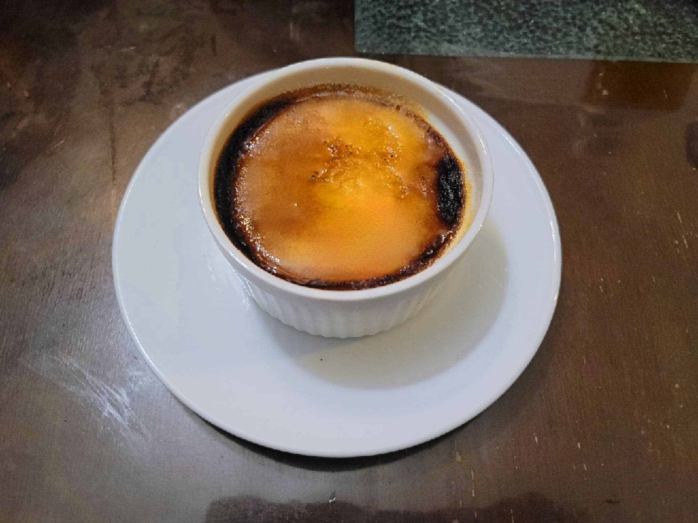

Crème Brûlée

Ingredients:
- 2 cups Heavy cream
- 1/8 tsp Salt
- 5 Egg yolks
- 1/2 cup Sugar + more as needed
- 1 tsp Vanilla extract
Instructions:
- Preheat an oven to 325 degrees Fahrenheit. Bring a pot of water to a boil.
- Add the cream and salt to a saucepan over medium-low heat. As it heats up, add the egg yolks and sugar to a bowl and whisk to combine. Whisk in some of the hot cream to temper the yolks. Then whisk the yolks into the rest of the cream. Remove from the heat.
- Pour the mixture evenly into 4 6 oz ramekins. Place into a baking dish and then fill the baking dish with boiling water just halfway up the sides of the ramekins. Carefully place into the oven and let bake for 30-40 minutes, or until just barely set.
- Transfer to the fridge and let chill overnight or up to 3 days.
- When ready to serve, place about 1 tsp each of sugar onto the tops of each ramekin in a thin even layer. Either use a torch to torch the tops until the sugar melts and browns, or place into a broiler for up to 5 minutes for a similar effect. Serve immediately.